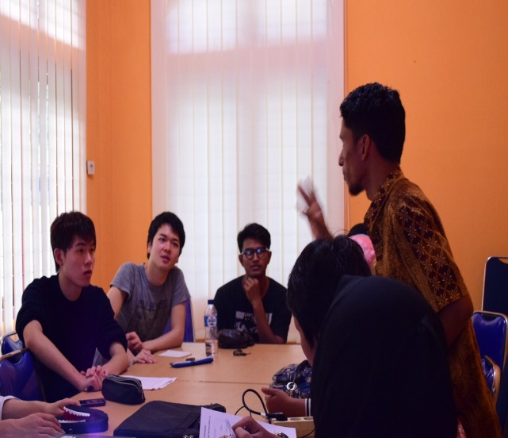
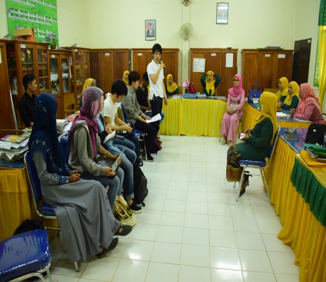
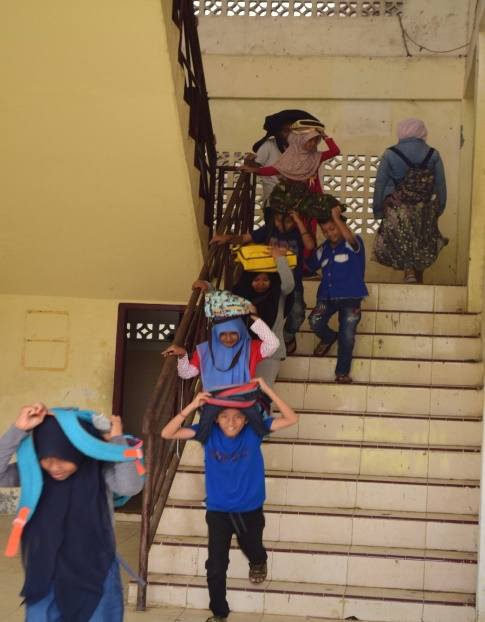
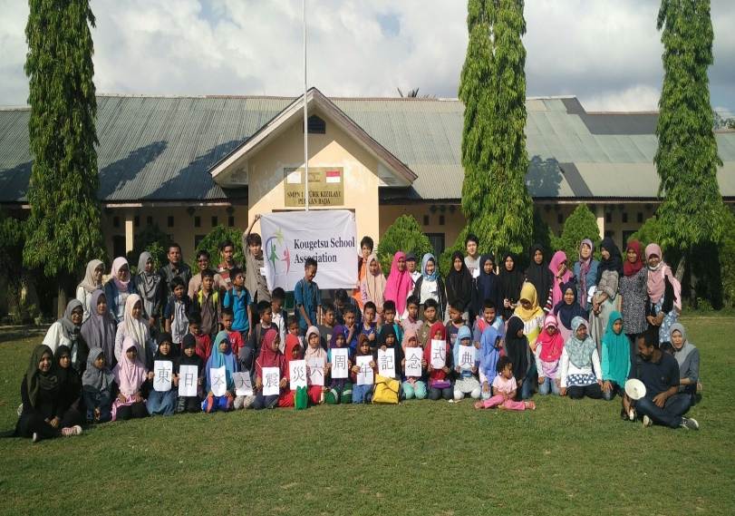
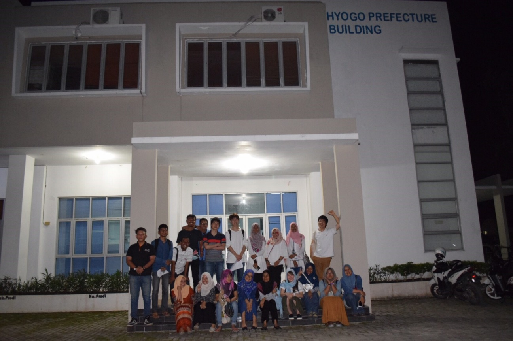

JISIは、インドネシアで活動するチームです。
インドネシアは、人口が2億人を超える東南アジア随一の大国で、近年急速な工業化が進み、首都のジャカルタは高層ビルが建ち並んでいます。
そんな発展の影に、インドネシアは首都の交通渋滞や、マングローブの過剰伐採、津波に対する防災など、他国と同様に様々な問題を抱えています。
MISは、原体験から問題意識を生み出し、それを解決するようなプロジェクトを生み出していくサークルです。我々JISIは、日本での東日本大震災と2004年のスマトラ沖地震を関連づけて考え、2015年の春からスマトラ島のアチェ州で地震と津波に関する活動を行っています。
アチェでSyiah Kuala大学のHIBEUNAという災害科学を専攻する院生の学生団体とともに行動しており、彼らはとても優しく全面的にサポートしてくれます。
2017年の９月に地震と津波の避難訓練を行うために、2017年の3月に行われた視察渡航では現地にある地震関連の政府組織と海沿いの小学校をそれぞれ二つずつ、津波ミュージアム、大学の地震研究所を訪問して訓練に必要な情報収集を行うと同時に訓練の運営を体験するために日本語学校において地震避難訓練を行いました。


政府組織と学校におけるミーティングの様子


避難訓練の様子と訓練後の集合写真
JISIは上でも述べたように2017年の9月にプロジェクトを実施することになっています。メインのプロジェクトとしては海の近くの複数の小学校とその周辺住民からなる地震と津波の避難訓練を行う予定です。
三月の春渡航で現地にある政府の災害関連組織の職員や大学教授などとの強いコネクションを得ることができました。アチェ政府に働きかけることも可能であり、JISIメンバーの努力次第で大規模なプロジェクトを実施することが可能です。ぜひ一度アチェに来てみてください。

JISIリーダー 能勢一路